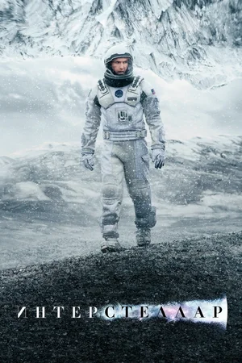

Кристофер Нолан
кинорежиссёр, сценарист и продюсер
Лучшие работы

Довод
После теракта в киевском оперном театре агент ЦРУ объединяется с британской разведкой, чтобы противостоять русскому олигарху, который сколотил состояние на торговле оружием.
Для этого агенты используют инверсию времени - технологию будущего, позволяющую времени идти вспять.
Дюнкерк
Фильм расскажет историю чудесного спасения более трехсот тысяч солдат в ходе Дюнкеркской операции, имевшей место в начале Второй мировой войны. События начинаются с окружения сотен тысяч британских и союзных войск силами противника.
Пойманные в ловушку на пляже, и находясь спиной к морю, они сталкиваются лицом к лицу с неразрешимой ситуацией, тем временем как тиски противника сжимаются все сильнее и сильнее.

Интерстеллар
Когда засуха, пыльные бури и вымирание растений приводят человечество к продовольственному кризису, коллектив исследователей и учёных отправляется сквозь червоточину (которая предположительно соединяет области пространства-времени через большое расстояние) в путешествие,
чтобы превзойти прежние ограничения для космических путешествий человека и найти планету с подходящими для человечества условиями.

Темный рыцарь: Возрождение легенды
Восемь лет назад Бэтмен растворился в ночи, превратившись из героя в беглеца. Приняв на себя вину за смерть прокурора Харви Дента, он пожертвовал всем. Вместе с комиссаром Гордоном они решили, что так будет лучше для всех. Пока преступность была раздавлена антикриминальным актом Дента, ложь действовала.
Тем не менее, еще опаснее становится появление нового врага Бэйна, чье лицо закрыто маской. Он разворачивает в Готэме чудовищную деятельность, и это вынуждает Брюса Уэйна выйти из импровизированного изгнания. Однако даже надев свой костюм, Бэтмен может проиграть Бэйну.
Но с появлением хитрой воровки по прозвищу Женщина — Кошка с загадочным прошлым всё меняется.
Карьера
Кинорежиссёр
16 фильмов
Оскар, 2018 год
Номинации: Лучший фильм («Дюнкерк») Лучший режиссер («Дюнкерк»)Золотой глобус, 2018 год
Номинации: Лучший режиссер («Дюнкерк»)Британская академия, 2018 год
Номинации: Лучший фильм («Дюнкерк») Премия имени Дэвида Лина за достижения в режиссуре («Дюнкерк»)Сатурн, 2015 год
Номинации: Лучший режиссер («Интерстеллар»)Продюсер
17 фильмов
Его десять фильмов собрали более 4,7 миллиардов долларов США по всему миру и получили в общей сложности 34 номинации на «Оскар», победив в десяти из них.
В 2010 году Нолану присуждена Премия «Британия» подразделения BAFTA в Лос-Анджелесе за художественное совершенство и мастерство постановщика на протяжении всей карьеры
Cценарист
18 фильмов
Сатурн, 2015 год
Победитель: Лучший сценарий («Интерстеллар»)Оскар, 2011 год
Номинации: Лучший фильм («Начало») Лучший сценарий («Начало»)Золотой глобус, 2011 год
Номинации: Лучший фильм (драма) («Начало») Лучший сценарий («Начало»)Британская академия, 2011 год
Номинации: Лучший оригинальный сценарий («Начало»)